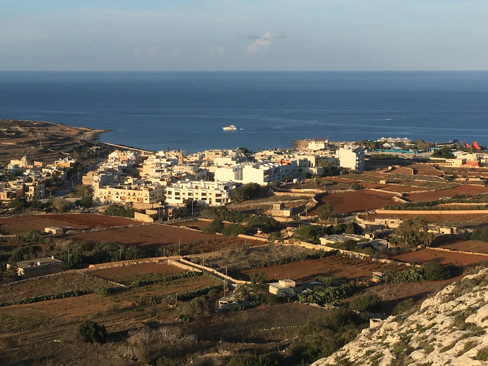

The council lists Baħar iċ-Ċagħaq Square and two local churches. Confirm the exact frontage, slope, daylight, parking and walking route at the address itself.
BAĦAR IĊ-ĊAGĦAQ · START WITH THE ADDRESS
Village streets meet a working coast.
Baħar iċ-Ċagħaq belongs to Naxxar, yet its inland residential core, Coast Road and bathing edge, and Qalet Marku context should be checked separately. A locality label alone never promises a sea view, short walk or quiet street.

ONE LOCALITY, THREE VIEWING CONTEXTS
The coast changes the questions, not the evidence.
The Address Registrar lists Baħar iċ-Ċagħaq under In-Naxxar in the Northern Region. Naxxar, Magħtab, Madliena, Għargħur, Pembroke and Salina remain distinct property-search contexts even when a broad map shows them close together.
The government identifies one monitored bathing point and a new public garden along this edge. Neither proves today’s water, access, traffic or distance from a listing.
Council records cover tower, battery and redoubt context. Do not turn that wider history into a claim about entry, condition, outlook or proximity.
One monitored point, not a generic beach promise.
Environmental Health identifies B01 at il-Qala ta’ Baħar iċ-Ċagħaq and describes a small sandy beach with remnants of a former dune system. The profile establishes the site; current water notices, sea conditions, access and suitability remain live checks.
Environmental Health profile ↗Ġnien it-Tbissim is a recent coastal addition.
A Government of Malta release records a 5,500-square-metre Coast Road garden with family and inclusive play equipment. Treat facilities, shade, access and condition as details to verify on the day; the source’s area-wide walking claim is not a property-specific route.
Government release ↗AUTHORITY- AND OPERATOR-BACKED EXAMPLES
Everyday, food and civic anchors without a “best of” list.
These examples give the locality useful texture. They are not a complete directory or a promise of live menus, prices, opening hours, appointments, parking, accessibility or distance from a property.
Mosta catchment
Primary HealthCare includes Baħar iċ-Ċagħaq within Naxxar’s Mosta Health Centre catchment. This does not place a clinic inside the village or guarantee a service, appointment or travel time.
Authority source ↗Elba
The operator places this family-run restaurant in Baħar iċ-Ċagħaq and describes a Mediterranean menu in a restored eighteenth-century building. Check the current offer and access directly.
Operator source ↗Square and churches
Naxxar Local Council lists Baħar iċ-Ċagħaq Square, St John the Evangelist and St Mary of the Angels. Their listing establishes local presence, not present opening or a walk from any home.
Council source ↗Qalet Marku’s surviving fabric belongs to a wider chain.
Naxxar Local Council records the 1658 Qalet Marku tower, early eighteenth-century battery remains and redoubts around Salina Bay and Baħar iċ-Ċagħaq. The account supports historical orientation only. It does not establish current public entry, conservation condition, a listing’s view or a safe route across the coastal edge.
Naxxar Local Council history ↗No blue line becomes a journey.
This edition draws no municipal boundary, generic walking route, road ETA, bus timetable, taxi price or ferry. Walking geometry, bus schedules, current car-traffic estimates and taxi-price observations are separate sources requiring exact endpoints, mode and timestamp. No land route may cut across the bay or sea, and no ferry is assumed for Baħar iċ-Ċagħaq.
Load the village, Coast Road and Qalet Marku frame only when useful.
The broad frame keeps the three contexts legible and shows neighbouring edges only for orientation. It draws no administrative boundary, shoreline route, property path or journey time. OpenStreetMap loads only after your click.
Address Registrar · Naxxar Local Council squares · churches and chapels · historical places · Environmental Health bathing profile · Government of Malta, Ġnien it-Tbissim · Primary HealthCare · Elba · Wikimedia Commons image record

No ranking, permanent opening, property-specific route, guaranteed sea view, parking claim, accessibility promise, bathing condition or journey time is claimed. Naxxar, Magħtab, Madliena, Għargħur, Pembroke and Salina remain distinct property-search contexts.